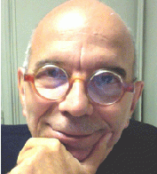

|

|
FROM MR ISING TO THE WONDERFUL WORLD OF SOCIOPHYSICSSerge GalamCentre de Recherche en Epistémologie AppliquéeThe Ising model is so simple that nobody would have give it a chance to survive after the "deceptive" work by Ising to check the existence of a phase transition between order and disorder. And indeed, it has allow hundreds of researchers all over the world and for decade to produce thousands of research papers in physics but also in many other fields. On top of that epistemological surprise the Ising model has been at the core of the creation of sociophysics, a field built from statistical physics to describe social and political behavior. The study of yes or no agents has driven hundreds of works, which enlighten from a different prospective the hidden mechanisms behind social dynamics. And it is far from being over.I will present the basic ingredients and main features of the Ising model within physics. I will then illustrate its use to apprehend opinion dynamics. Several real life applications will be also discussed. A few papers to read:
Personal webpage |